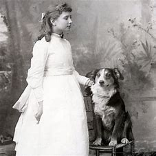

L'enfance de Helen Keller

Helen adams Keller est née le 27 juin 1880 à Tuscumbia, petite ville rurale d'Alabama.

Fille du capitaine Arthur Keller, militaire en retraite éditeur de journaux, et de Kate Adams Keller, Helen fut victime, vers l'âge de 19 mois, d'une maladie infantile diagnostiquée à l'époque comme "fièvre cérébrale" (plus probablement une scarlatine) qui la laissa sourde, muette et aveugle.

Helen décrira plus tard cette période comme un "no-world" (non-monde), un univers noir et silencieux dénué de toute communication humaine. Son entourage pense que la maladie l'avait rendue idiote.